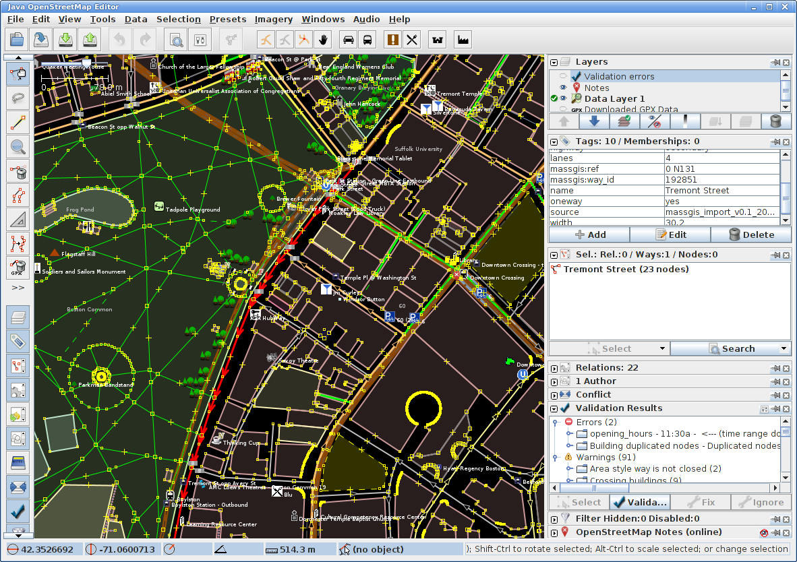

OSM Editing - Beyond Basics
lars@ahlzen.com
JOSM
Prerequisites
Always checks for most recent version on startup
Setting up JOSM
Preferences
Recommended plugins
Additional imagery
Differences from iD
Quick recap:
OSM data model
JOSM has two main tools:
Learn and use keyboard shortcuts (in hovertext)
Imagery
Demo